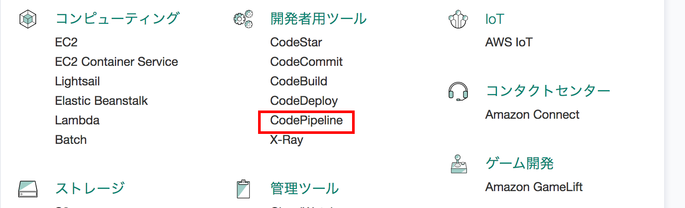
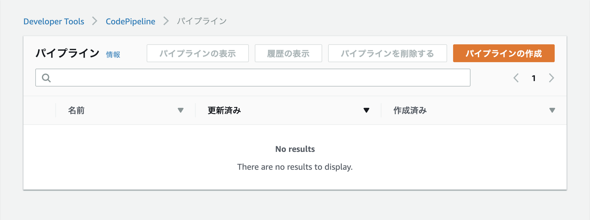
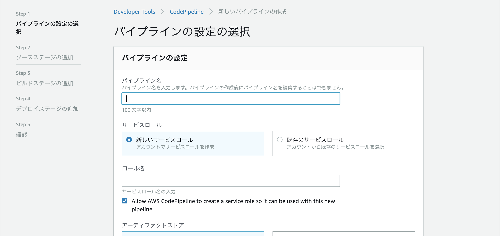
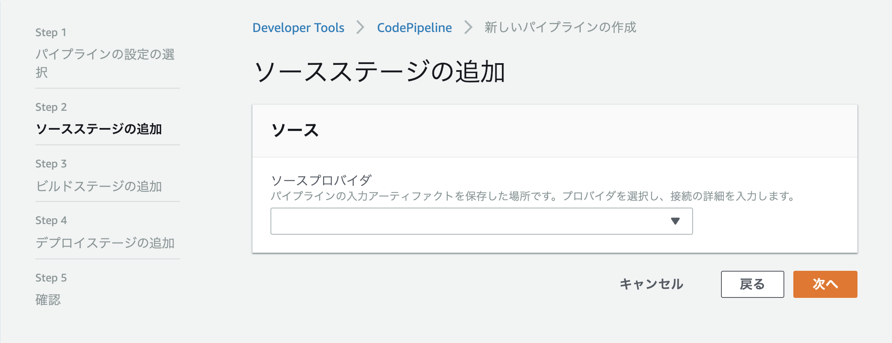
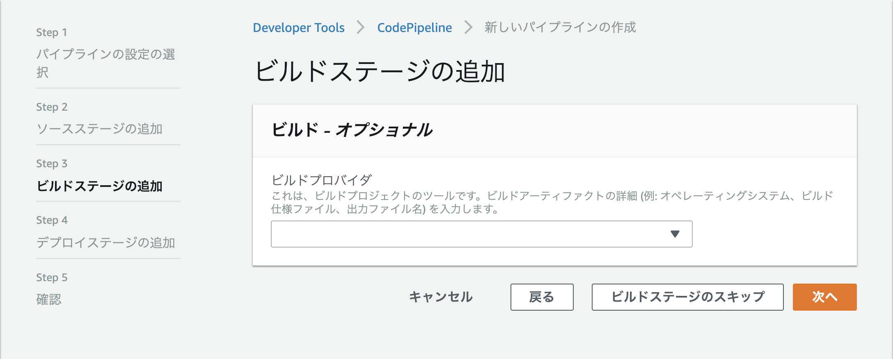
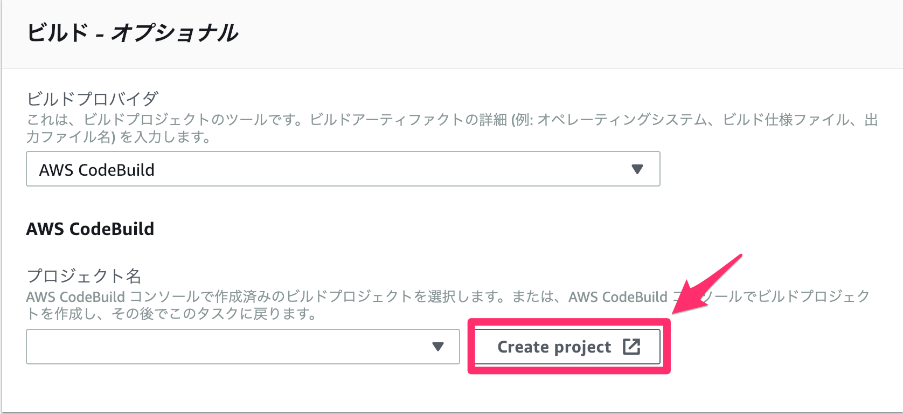
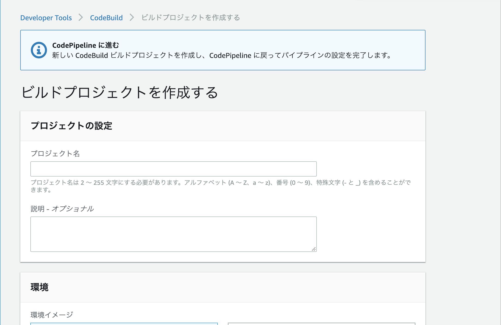
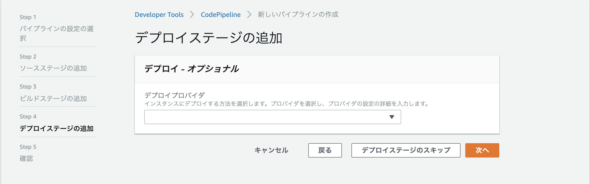
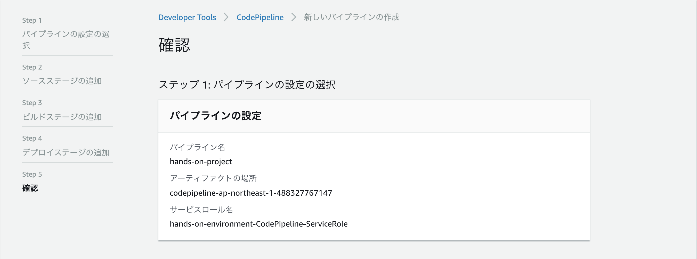

CodePipeline によるパイプラインの構築
手動でのデプロイが大変だと感じてもらったところで、CodePipeline/CodeBuild を使用したパイプラインを作成していきます。
今回作成するパイプラインは以下図の左側の部分です。

では、早速作成していきましょう。
パイプラインの作成開始まで
マネジメントコンソールのトップ画面より「CodePipeline」をクリックします。

すると、以下のような画面が表示されます。

「パイプラインの作成」をクリックします。
「パイプラインの設定の選択」画面
「パイプラインの設定の選択」画面に遷移します。

以下の表のように入力します。「次へ」をクリックします。
| 入力項目 | 値 |
|---|---|
| パイプライン名 | hands-on-pipeline |
| サービスロール | 既存のサービスロール |
| サービスロール名 | hands-on-environment-CodePipeline-ServiceRole |
| アーティファクトストア | デフォルトの場所 |
入力が終わったら、「次へ」をクリックします。
「ソースステージの追加」画面
「ソースステージの追加」画面に遷移します。

以下の表のように入力します。
| 入力項目 | 値 |
|---|---|
| ソースプロバイダ | GitHub |
| リポジトリ | フォークしておいたリポジトリ |
| ブランチ | master |
| 変更検出オプション | GitHub ウェブフック(推奨) |
入力が終わったら、「次へ」をクリックします。
「ビルドステージの追加」 画面
「ビルドステージの追加」画面に遷移します。

ビルドプロバイダとして、AWS CodeBuildを選択すると表示されるCreate Projectというボタンをクリックします。

CodeBuildのプロジェクト作成ウィンドウ
CodeBuild のプロジェクト作成画面が新しいウィンドウで開きます。

CodeBuild のプロジェクトを作成していきます。
プロジェクトの設定
| 入力項目 | 値 |
|---|---|
| プロジェクト名 | hands-on-project |
環境
| 入力項目 | 値 |
|---|---|
| 環境イメージ | マネージド型イメージ |
| オペレーティングシステム | Ubuntu |
| ランタイム | Node.js |
| ランタイムバージョン | aws/codebuild/nodejs:10.14.1 |
| イメージのバージョン | このランタイムバージョンには常に最新のイメージを使用してください |
| 特権付与 | ✔ |
| サービスロール | 既存のサービスロール |
| ロール名 | hands-on-environment-CodeBuild-ServiceRole |
| AWS CodeBuildにこのサービスロールの編集を許可し | (チェックを外す) |
| びるどしよ |
Buildspec
| 入力項目 | 値 |
|---|---|
| ビルド仕様 | buildspecファイルを使用する |
| BuildSpec名 | (空欄のまま) |
入力が済んだら「CodePipelineに進む」ボタンをクリックします
CodePipeline作成画面に戻った後
CodePipelineの画面に戻ったら、以下のように入力されていることを確認し、「次へ」をクリックします。
| 入力項目 | 値 |
|---|---|
| ビルドプロバイダ | AWS CodeBuild |
| プロジェクト名 | hands-on-project |
「デプロイステージの追加」画面
「デプロイステージの追加」画面に遷移します。

以下の表のように入力します。
| 入力項目 | 値 |
|---|---|
| デプロイプロバイダ | Amazon ECS |
| クラスター名 | hands-on-environment-ECSCluster |
| サービス名 | hands-on-environment-ECSService |
| イメージ定義ファイル | imagedefinitions.json |
imagedefinitions.json
「次へ」をクリックします
確認画面
最後に確認画面が表示されます。

表示された設定内容を確認後、「パイプラインの作成」をクリックします。